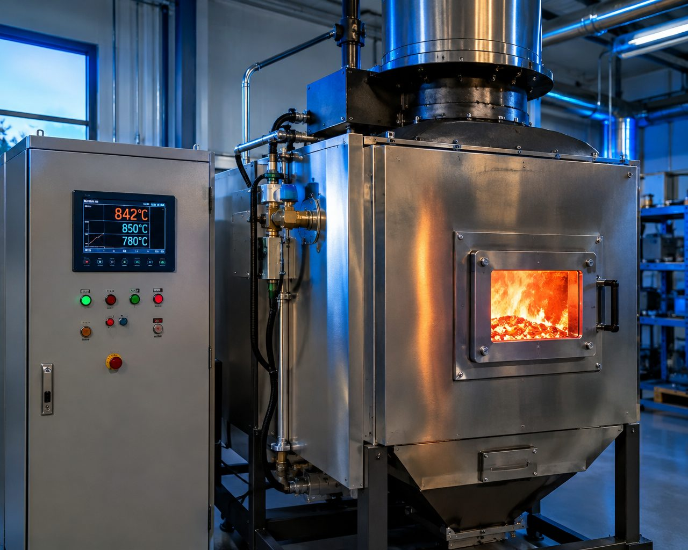
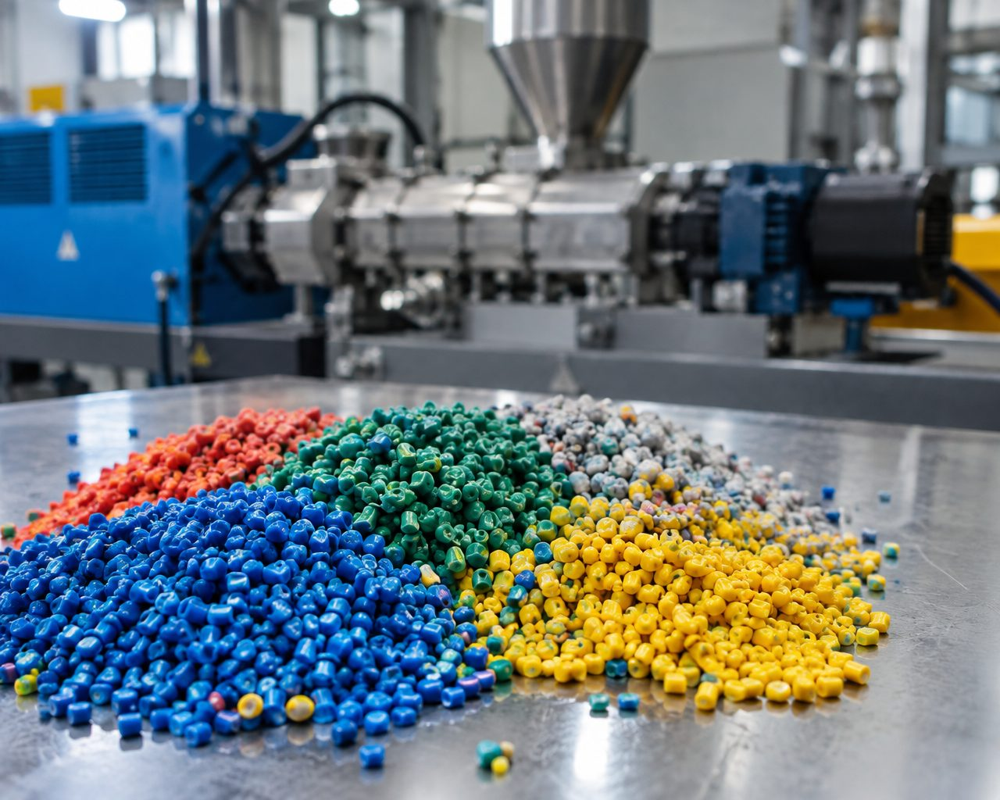
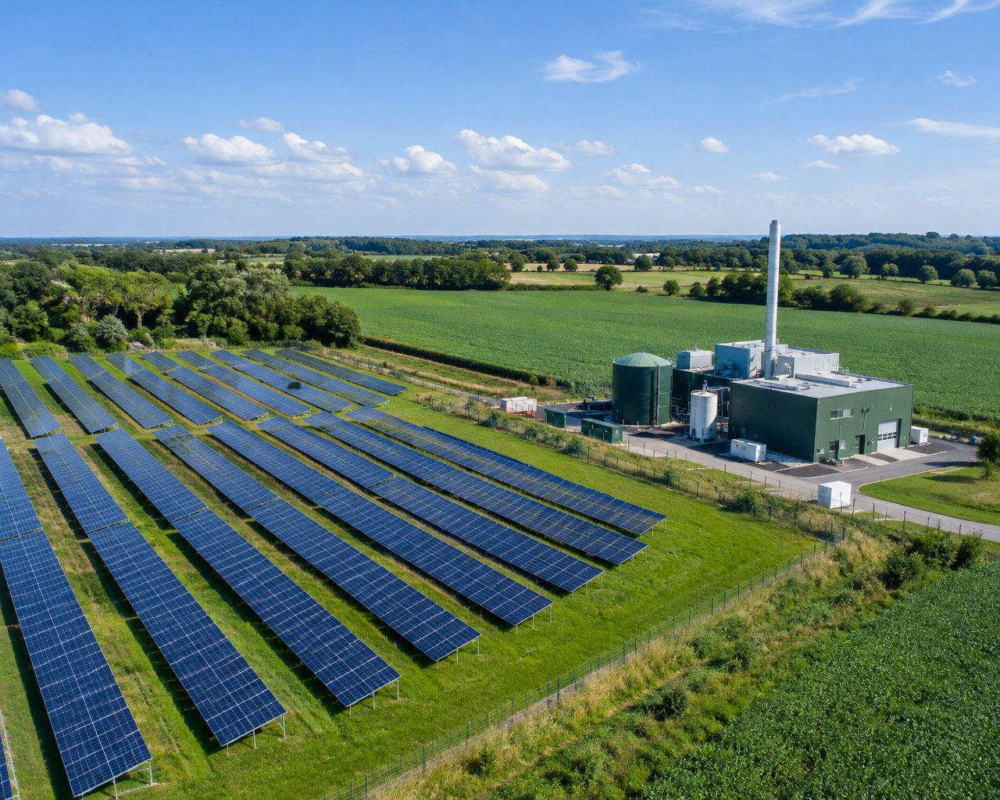

Where it works
Built for farms, factories and cities.
Stubble to energyCrop residue becomes power, not smoke

Precision furnace150°C to 1500°C control

Plastic recyclingZero-dioxin thermal furnace

Green buildingsLower electricity bills

Integrated energyWaste plus solar, 24 x 7